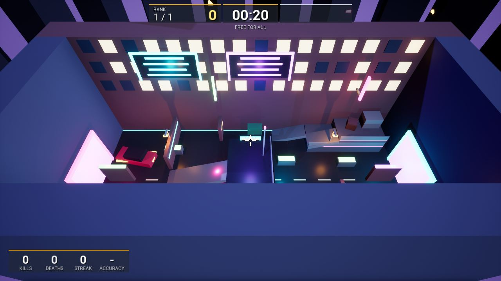
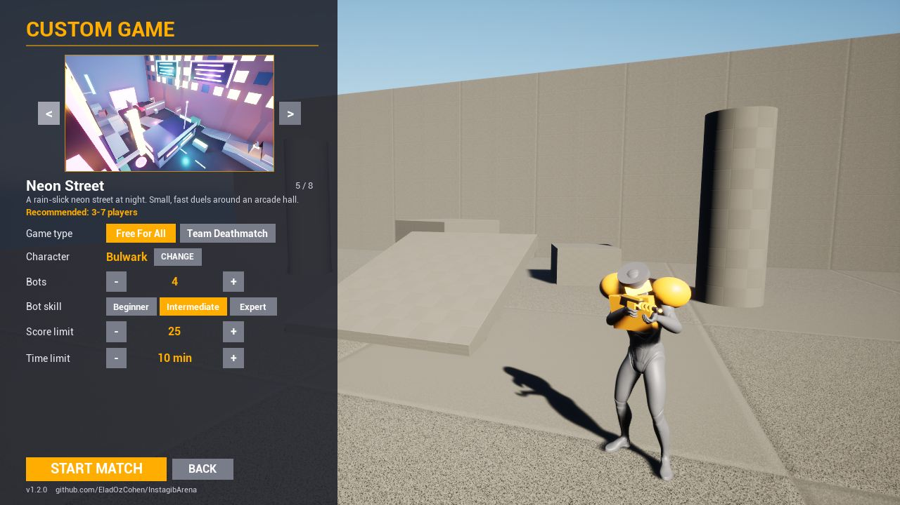
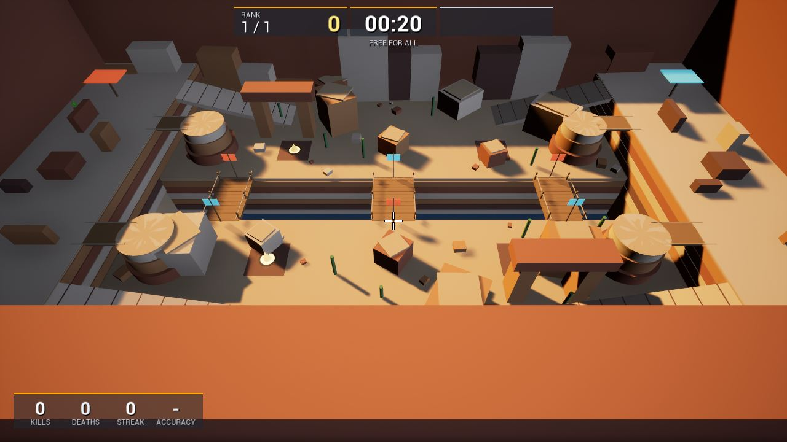
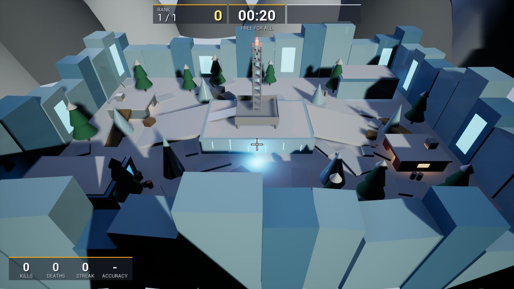
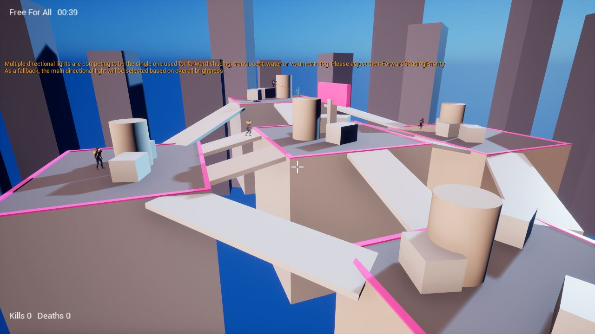

INSTAGIB ARENA
One shot. One kill.
ירייה אחת. הריגה אחת.
A fast, free first-person shooter for Windows. Play alone against bots, or with friends. Download it, install it in four clicks, and you are in a match in a few minutes. No account, no extra software.
משחק יריות מהיר וחינמי בגוף ראשון ל-Windows. משחקים לבד נגד בוטים או עם חברים. מורידים, מתקינים בארבע לחיצות, ותוך כמה דקות כבר במשחק. בלי הרשמה ובלי תוכנות נוספות.

How to install: 4 simple steps
איך מתקינים: 4 צעדים פשוטים
Takes about two minutes. Windows will show a warning screen once. That is normal and the next step explains it, so do not worry.
לוקח כשתי דקות. Windows יציג פעם אחת מסך אזהרה. זה רגיל, והצעד השני מסביר אותו, אז אין מה לדאוג.
-
Download the installer
מורידים את קובץ ההתקנה
Press the big orange Download for Windows button at the top of this page (or here). A file called InstagibArena_Setup starts downloading.
לוחצים על הכפתור הכתום הגדול הורדה ל-Windows בראש הדף (או כאן). קובץ בשם InstagibArena_Setup מתחיל להיכנס למחשב.
If your browser asks whether to keep the file, choose Keep. The file is large, so give it a minute.
אם הדפדפן שואל אם לשמור את הקובץ, בוחרים שמור (Keep). הקובץ גדול, אז נותנים לו דקה.
-
Open the file, and if Windows shows a blue screen, click "More info"
פותחים את הקובץ, ואם Windows מציג מסך כחול, לוחצים על "More info"
Open your Downloads folder and double-click the file. You will probably see a blue window that says "Windows protected your PC". This is not a virus. Windows shows it for every new program from a small developer that has not paid for a digital signature yet. Do this:
פותחים את תיקיית הורדות (Downloads) ולוחצים פעמיים על הקובץ. סביר שיופיע חלון כחול עם הכיתוב "Windows protected your PC". זה לא וירוס. Windows מציג אותו לכל תוכנה חדשה של מפתח קטן שעוד לא שילם על חתימה דיגיטלית. עושים כך:
A. Click “More info”לוחצים על “More info”
Windows protected your PC
Microsoft Defender SmartScreen prevented an unrecognized app from starting. Running this app might put your PC at risk.
More infoB. Then click “Run anyway”ואז לוחצים על “Run anyway”
Windows protected your PC
App: InstagibArena_Setup
Publisher: Unknown publisherRun anywayDon't runThe pictures are a simple illustration. Your screen may look a little different, but the words “More info” and “Run anyway” are the same.
התמונות הן המחשה פשוטה. אצלך זה עשוי להיראות קצת אחרת, אבל המילים “More info” ו-“Run anyway” זהות.
If Windows asks "Do you want to allow this app to make changes?", click Yes. The installer needs that to put the game in the right place.
אם Windows שואל "Do you want to allow this app to make changes?", לוחצים Yes. ההתקנה צריכה את זה כדי לשים את המשחק במקום הנכון.
-
Follow the installer: just keep pressing "Next"
עוברים על אשף ההתקנה: פשוט ממשיכים ללחוץ "Next"
Choose your language (English or Hebrew), then press Next until it says Install. Leave the boxes as they are. The installer puts the game on your computer and adds everything the game needs, so you do not have to install anything else.
בוחרים שפה (עברית או אנגלית), ולוחצים Next עד שמופיע Install. משאירים את התיבות כמו שהן. האשף שם את המשחק במחשב ומוסיף כל מה שהוא צריך, אז אין צורך להתקין שום דבר אחר.
Tip: keep the box “Allow the game through Windows Firewall” ticked. It is what lets your friends join your games.
טיפ: משאירים מסומנת את התיבה של חומת האש (Firewall). בזכותה חברים יכולים להצטרף למשחקים שלך.
-
Press "Quick Play" and you are in
לוחצים "Quick Play" וזהו, אתה במשחק
At the end, leave “Launch Instagib Arena” ticked and press Finish. Later you can start the game from the desktop icon or the Start menu. In the main menu, press QUICK PLAY to jump straight into a match against bots.
בסוף משאירים מסומן “Launch Instagib Arena” ולוחצים Finish. בהמשך מפעילים את המשחק מהסמל בשולחן העבודה או מתפריט התחל. בתפריט הראשי לוחצים QUICK PLAY וקופצים ישר למשחק נגד בוטים.
Is it safe? Yes. The whole game is open source: anyone can read exactly what it does, at github.com/EladOzCohen/InstagibArena. The blue warning appears only because the installer is not digitally signed yet (a signature costs money every year). If you would rather not run it, you can simply not install it. Nothing happens to your computer until you click Run anyway.
זה בטוח? כן. כל המשחק הוא קוד פתוח: כל אחד יכול לקרוא בדיוק מה הוא עושה, ב-github.com/EladOzCohen/InstagibArena. האזהרה הכחולה מופיעה רק כי ההתקנה עוד לא חתומה דיגיטלית (חתימה עולה כסף כל שנה). אם אתה מעדיף לא להריץ, פשוט אל תתקין. שום דבר לא קורה למחשב עד שלוחצים Run anyway.
What is Instagib Arena?
מה זה Instagib Arena?
You have one weapon: a rifle that kills with a single hit. So does everyone else. It is all about fast movement, good aim and quick reactions, in the spirit of classic arena shooters.
יש לך נשק אחד: רובה שהורג בפגיעה אחת. וגם לכל השאר. הכול תלוי בתנועה מהירה, כוונה טובה ותגובה מהירה, ברוח משחקי הזירה הקלאסיים.
8 maps
8 מפות
From an industrial yard to a neon street, a lava forge, an ice outpost and a huge canyon. Jump pads launch you to the high ground.
מחצר תעשייתית ועד רחוב ניאון, מפעל לבה, מוצב קרח וקניון ענק. משטחי קפיצה משגרים אותך לעמדות הגבוהות.
Bots, 3 levels
בוטים בשלוש רמות
Play against 2 to 10 computer opponents: beginner, intermediate or expert. Perfect for learning.
משחקים נגד 2 עד 10 יריבים ממוחשבים: מתחיל, בינוני או מומחה. מושלם ללמידה.
Play with friends
משחקים עם חברים
One of you hosts a game, the others join with an address. Free for all, or team deathmatch (red vs blue).
אחד מכם פותח משחק, והשאר מצטרפים עם כתובת. כולם נגד כולם, או קרב קבוצות (אדום נגד כחול).
Fast, fluid movement
תנועה מהירה וחלקה
Double jump, dodge, wall dodge, crouch and a slow walk. Animated characters with the rifle in their hands.
קפיצה כפולה, דודג', דודג' מהקיר, התכופפות והליכה איטית. דמויות מונפשות עם הרובה בידיים.
15 characters
15 דמויות
Pick your look in a menu with a live 3D preview.
בוחרים מראה בתפריט עם תצוגה מקדימה חיה בתלת מימד.
Made for everyone
מותאם לכולם
Rebind every key, four crosshair styles, camera comfort options, and menus that work with mouse or keyboard.
אפשר לשנות כל מקש, יש ארבעה סוגי כוונת, אפשרויות נוחות למצלמה, ותפריטים שעובדים עם עכבר או מקלדת.




Playing with friends
משחקים עם חברים
Everyone needs the game installed. One person hosts, the others join.
לכולם צריך להיות המשחק מותקן. אחד פותח משחק, והאחרים מצטרפים.
The host (one person)
מי שפותח את המשחק (אחד)
- Main menu: Multiplayer, then Host a game.
- Press Host game.
- The screen shows an address (like 192.168.1.20). Tell it to your friends, or press Copy address.
- בתפריט הראשי: Multiplayer, ואז Host a game.
- לוחצים Host game.
- על המסך מופיעה כתובת (כמו 192.168.1.20). אומרים אותה לחברים, או לוחצים Copy address.
Everyone else
כל השאר
- Main menu: Multiplayer, then Join a game.
- Type the address from the host.
- Press Join game.
- בתפריט הראשי: Multiplayer, ואז Join a game.
- מקלידים את הכתובת שקיבלתם מהמארח.
- לוחצים Join game.
Same home network (Wi-Fi)? That is all you need. Friends in other places? The easiest way is for everyone to install the free Tailscale app, join the same network, and use the host's address from there.
באותה רשת ביתית (Wi-Fi)? זה כל מה שצריך. חברים במקומות אחרים? הדרך הקלה ביותר היא שכולם יתקינו את האפליקציה החינמית Tailscale, יצטרפו לאותה רשת, וישתמשו שם בכתובת של המארח.
Controls
שליטה
You can change any key in Settings, under Controls.
אפשר לשנות כל מקש בהגדרות, תחת Controls.
| W A S D | Moveתנועה |
| Mouse | Look aroundלהסתכל מסביב |
| Left click | Fire (one hit kills)ירי (פגיעה אחת הורגת) |
| Space | Jump. Press twice for a double jumpקפיצה. פעמיים לקפיצה כפולה |
| W W | Double-tap a direction key to dodge. Dodge next to a wall in the air for a wall dodgeלחיצה כפולה על מקש כיוון לדודג'. דודג' ליד קיר באוויר נותן דודג' מהקיר |
| Left Ctrl | Crouch (hold)התכופפות (להחזיק) |
| Left Shift | Slow, quiet walk (hold)הליכה איטית ושקטה (להחזיק) |
| Tab | Scoreboardלוח תוצאות |
| Esc | Pause menu (resume, settings, leave the match)תפריט השהיה (המשך, הגדרות, יציאה מהמשחק) |
Questions and problems
שאלות ובעיות
Do I need to install anything else, like Unreal Engine?צריך להתקין עוד משהו, כמו Unreal Engine?
No. The installer includes everything. You only need Windows 10 or 11 (64-bit) and a graphics card that supports DirectX 12 (almost every computer from the last several years).
לא. ההתקנה כוללת הכול. צריך רק Windows 10 או 11 (64 ביט) וכרטיס מסך שתומך ב-DirectX 12 (כמעט כל מחשב מהשנים האחרונות).
Windows says "Windows protected your PC". What do I do?Windows כותב "Windows protected your PC". מה עושים?
Click More info, then Run anyway. See step 2 above, with pictures. It appears because the installer has no paid digital signature yet. The game's code is open for anyone to read.
לוחצים More info ואז Run anyway. ראה צעד 2 למעלה, עם תמונות. זה מופיע כי להתקנה אין עדיין חתימה דיגיטלית בתשלום. הקוד של המשחק פתוח לקריאה לכל אחד.
The game is slow or choppyהמשחק איטי או מקרטע
Open Settings, then Video. Lower the Quality, lower the resolution, or turn Motion blur off. Close other heavy programs while you play. A laptop should be plugged in.
פותחים Settings, ואז Video. מורידים את Quality, מקטינים את הרזולוציה או מכבים את Motion blur. סוגרים תוכנות כבדות אחרות בזמן המשחק. מחשב נייד צריך להיות מחובר לחשמל.
My friends cannot join my gameהחברים שלי לא מצליחים להצטרף
Check that: (1) you all have the same version of the game, (2) the host ticked the Windows Firewall box during installation (or allows the game when Windows asks), (3) you typed the address exactly as shown, and (4) you are on the same Wi-Fi, or use a free tool like Tailscale if you are in different places.
בודקים: (1) לכולם אותה גרסה של המשחק, (2) המארח סימן את תיבת חומת האש בהתקנה (או אישר למשחק כש-Windows שאל), (3) הקלדתם את הכתובת בדיוק כמו שהיא מוצגת, (4) אתם על אותו Wi-Fi, או משתמשים בכלי חינמי כמו Tailscale אם אתם במקומות שונים.
How do I uninstall it?איך מסירים את ההתקנה?
Windows Settings, then Apps, find Instagib Arena and click Uninstall. It removes the game and its Firewall rule.
בהגדרות Windows נכנסים ל-Apps, מוצאים את Instagib Arena ולוחצים Uninstall. זה מסיר את המשחק ואת חוק חומת האש שלו.
Is there a Mac or phone version?יש גרסה ל-Mac או לטלפון?
Not yet. For now the game is only for Windows PCs.
עדיין לא. כרגע המשחק רק למחשבי Windows.
Something else is wrong, or I have an ideaיש בעיה אחרת, או רעיון
Please tell us: open an issue on GitHub. Write what happened and what you expected.
נשמח לשמוע: פותחים דיווח ב-GitHub. כותבים מה קרה ומה ציפית שיקרה.
Ready to play?
מוכנים לשחק?
Download, install, press Quick Play.
מורידים, מתקינים, לוחצים Quick Play.
Download for Windowsהורדה ל-Windows